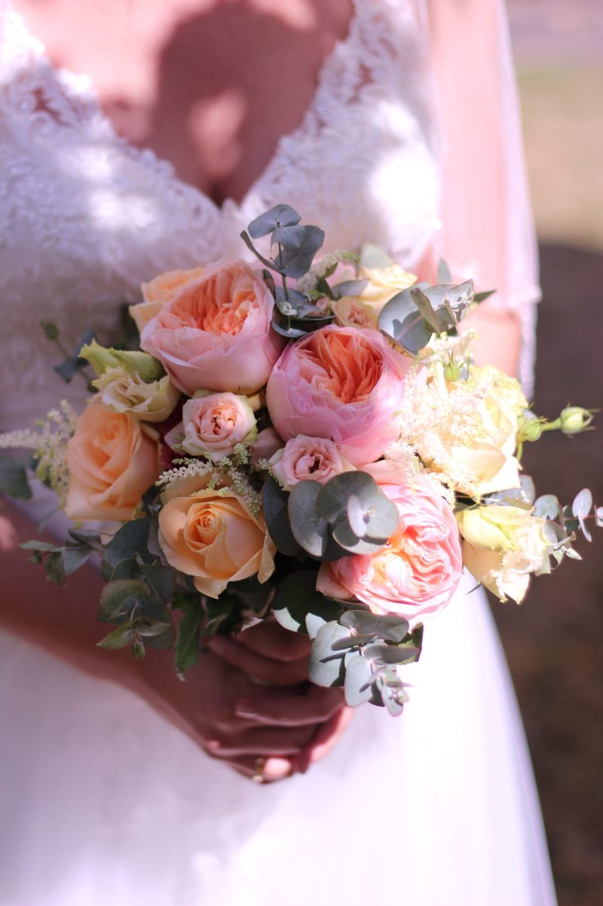
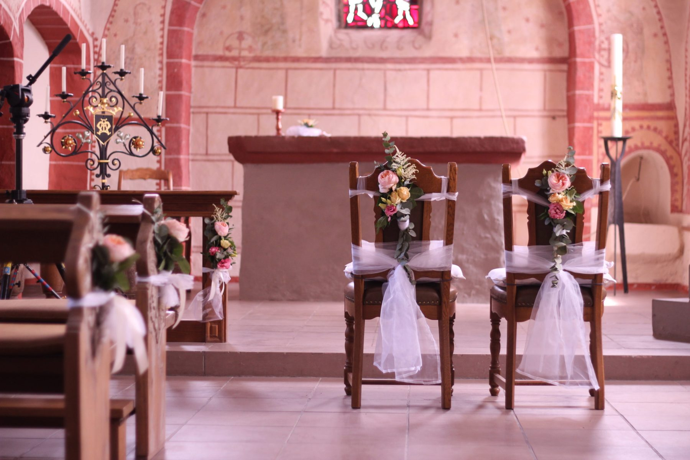
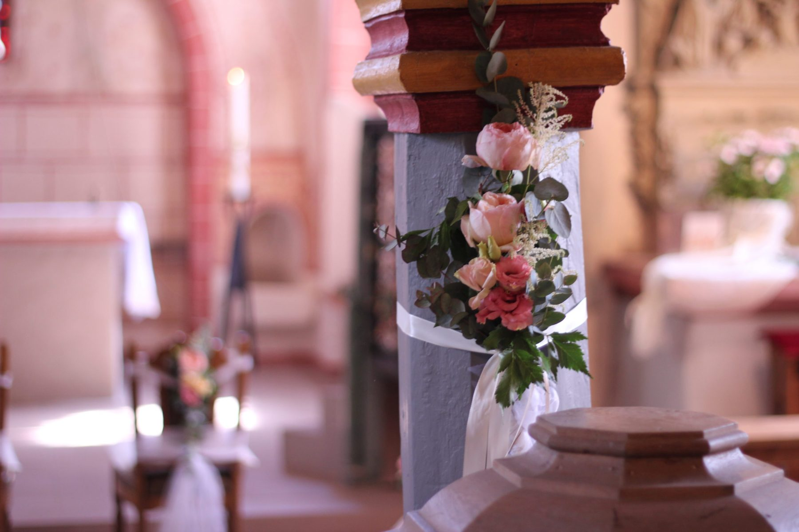
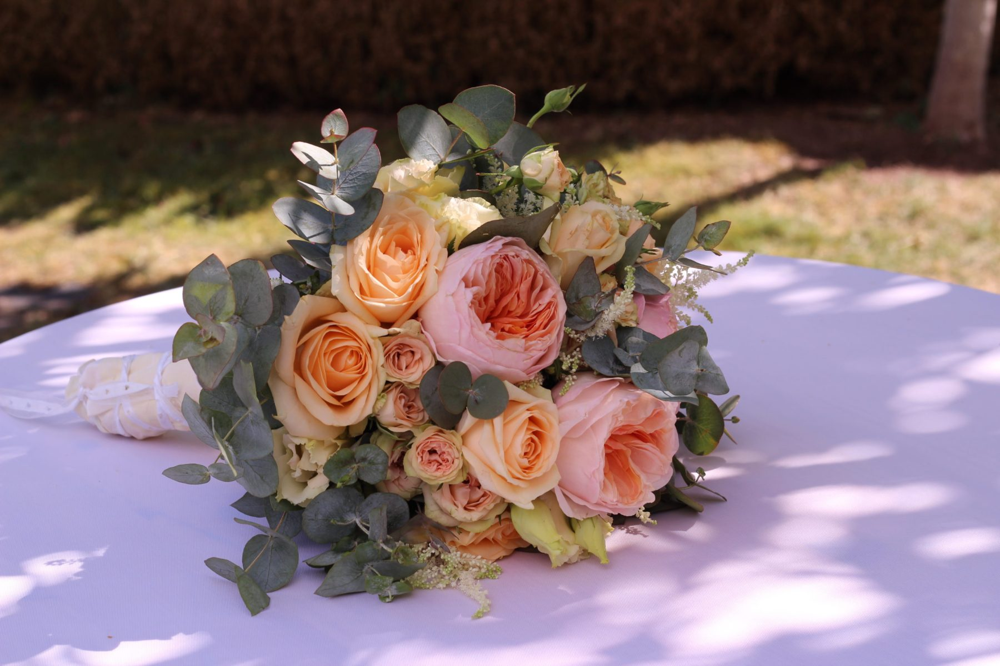
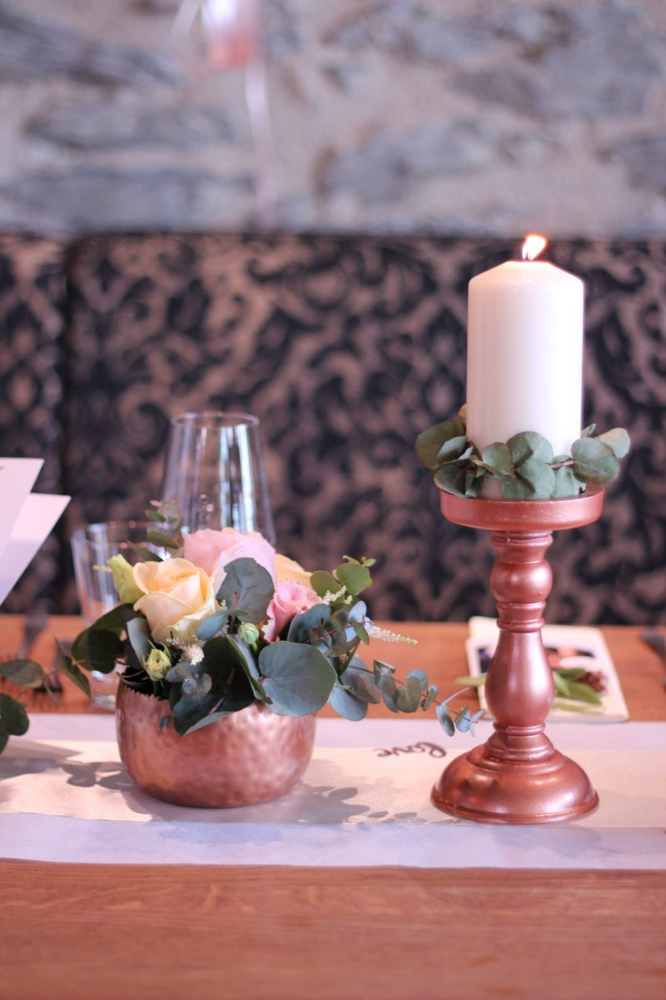
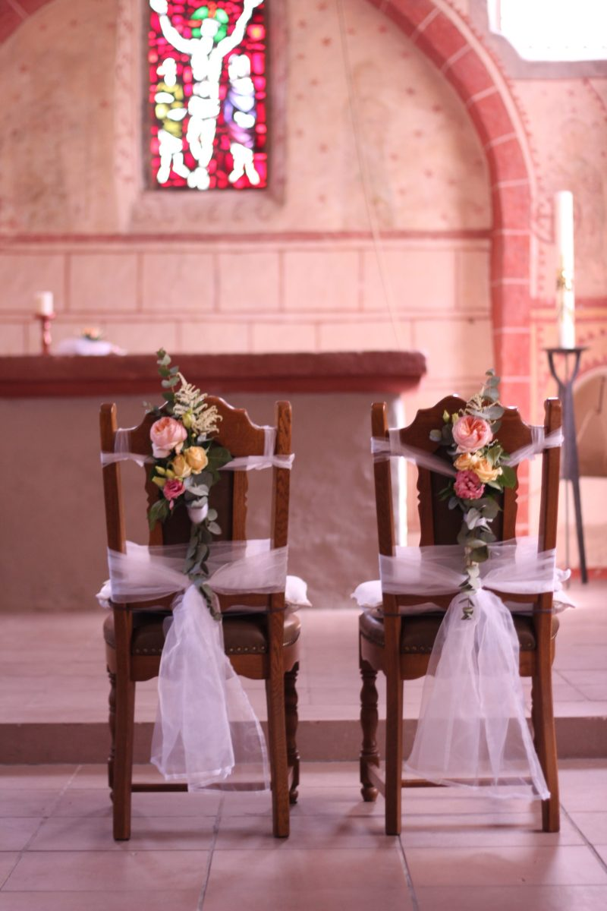
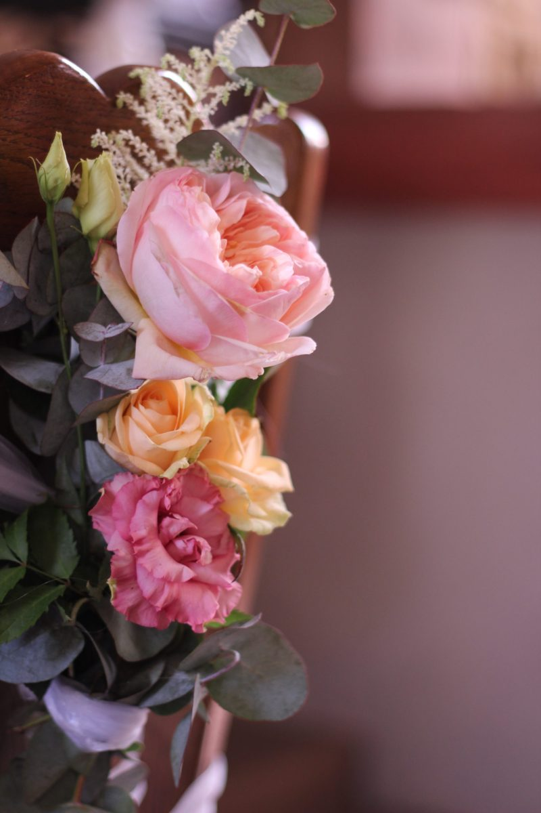
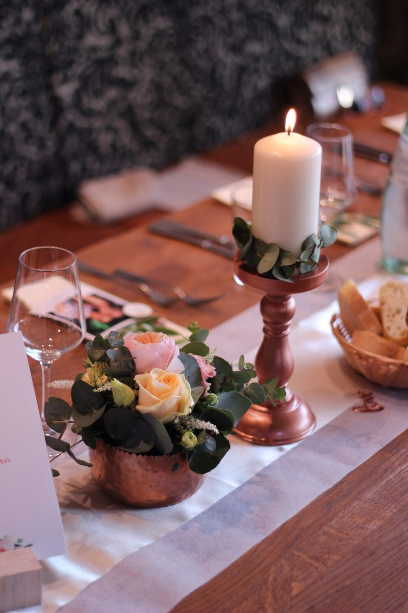
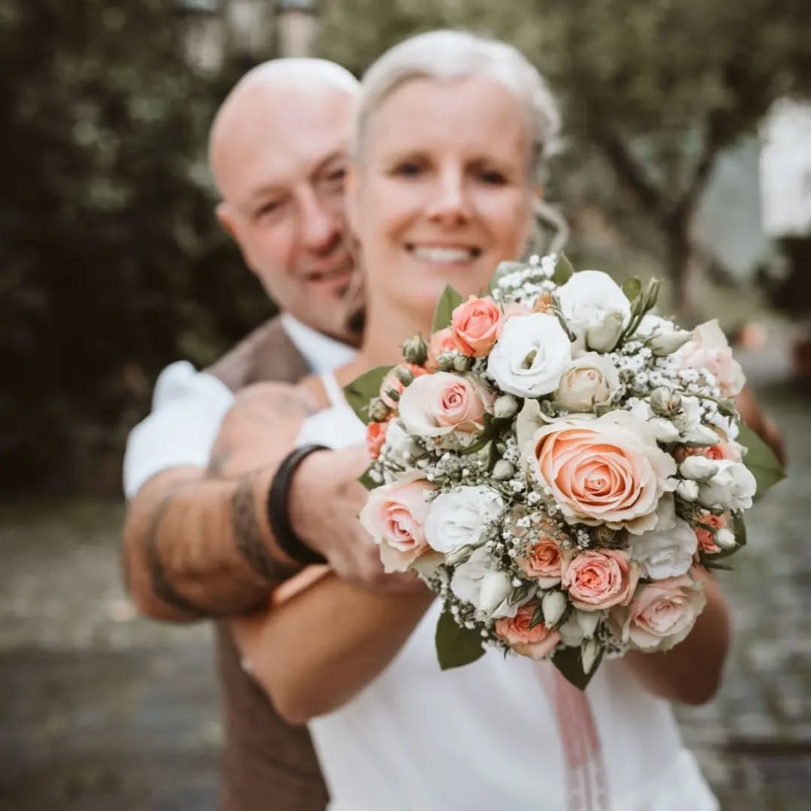

Hochzeitsfloristik
"Blumen sind die schönsten Worte der Natur"
Unsere Hochzeitsangebote

Brautstrauß & Anstecker
Der perfekte Brautstrauß wird gemeinsam mit Ihnen entwickelt. Von klassisch elegant bis modern verspielt, kreieren wir genau das, was Sie sich vorstellen. Auch Anstecker für die Trauzeugen sind möglich.

Kirchenschmuck
Die Kirche wird zur Kulisse Ihrer Liebe. Wir dekorieren Altar, Eingänge und Bänke mit stimmungsvollen Blumenarrangements, die das Sakrale unterstreichen und eine unvergessliche Atmosphäre schaffen.

Tischdekoration
Von dezenten Tischgestecken bis zu opulenten Arrangements, Vasen und Kerzenleuchtern, die Ihre Festtafel in ein blühendes Paradies verwandeln. Wir schaffen eine harmonische Tischdekoration für alle Gäste.
Unser Hochzeits-Prozess
Beratungsgespräch
Wir besprechen Ihre Vorstellungen, Ihre Hochzeitsfarbenlehre, den Stil und Ihre persönlichen Wünsche in aller Ruhe.
Konzept & Moodboard
Auf Basis unseres Gesprächs entwickeln wir ein Konzept mit Moodboard und zeigen Ihnen verschiedene Varianten der Gestaltung.
Probebinden
Beim Probebinden sehen Sie Ihren Brautstrauß und alle Arrangements in real und können noch kleinere Anpassungen vornehmen.
Der große Tag
Am Hochzeitstag liefern und dekorieren wir alle Blumenarrangements und kümmern uns um alle Details, damit Ihre Hochzeit perfekt wird.
Hochzeits-Galerie






Häufig gestellte Fragen
Ideal ist es, sich etwa 3-6 Monate vor dem geplanten Hochzeitstermin bei uns zu melden. Das gibt uns genug Zeit für ein ausgiebiges Beratungsgespräch, die Planung und das Probebinden. Bei sehr kurzfristigen Anfragen versuchen wir gerne, noch Platz zu machen, können aber keine Garantie geben.
Gerne können Sie Blumen mitbringen, die Sie persönlich sind bedeutsam sind. Allerdings müssen diese mit unserem Floristenblick in Farbe, Form und Haltbarkeit zum Gesamtkonzept passen. Wir besprechen das gerne mit Ihnen im Beratungsgespräch.
Hochzeiten finden ja meistens am Wochenende statt, daher sind wir gerne auch samstags und sonntags für Sie tätig. Feiertage klären wir individuell mit Ihnen ab. Ein Zuschlag für Wochenenden und Feiertage ist möglich.
Selbstverständlich! Wir dekorieren nicht nur Kirche und Trauort, sondern auch Ihre Feststätte. Ob Eingangsbereiche, Tische, Bar oder Tanzfläche, wir schaffen eine durchgehend harmonische und stimmungsvolle Blumendekoration.
Saisonal bedingt oder bei Lieferschwierigkeiten können einzelne Blumensorten ausfallen. In diesem Fall stellen wir zeitnah ähnliche Sorten vor, die den gleichen ästhetischen und stimmungsvollen Effekt erzeugen. Mit unserem großen Netzwerk finden wir immer eine passende Lösung.